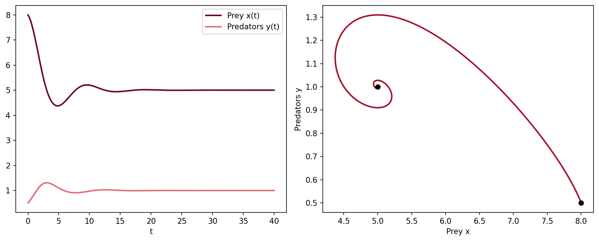
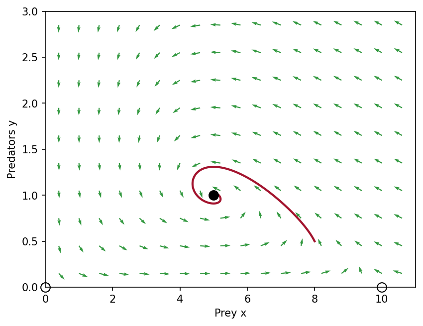
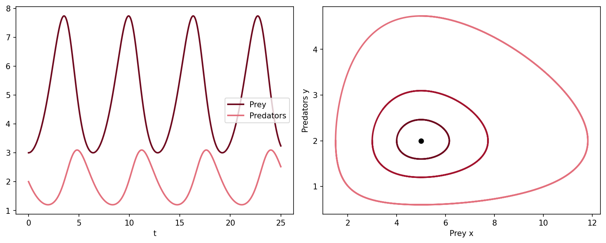
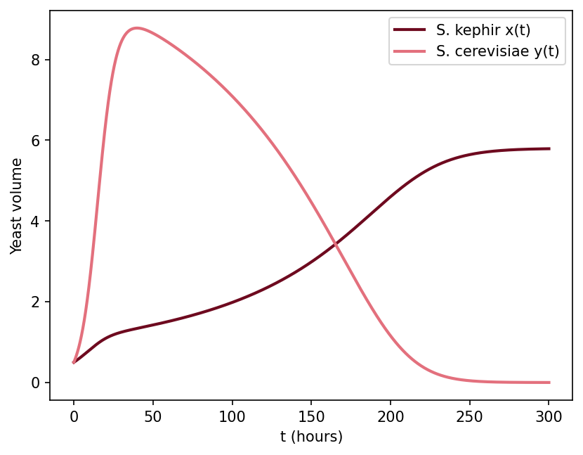
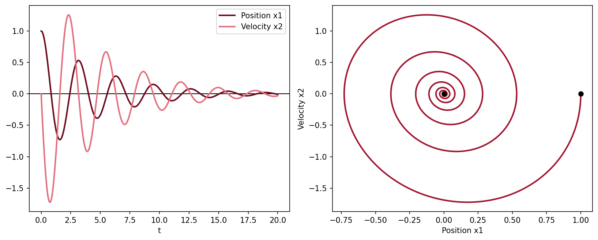
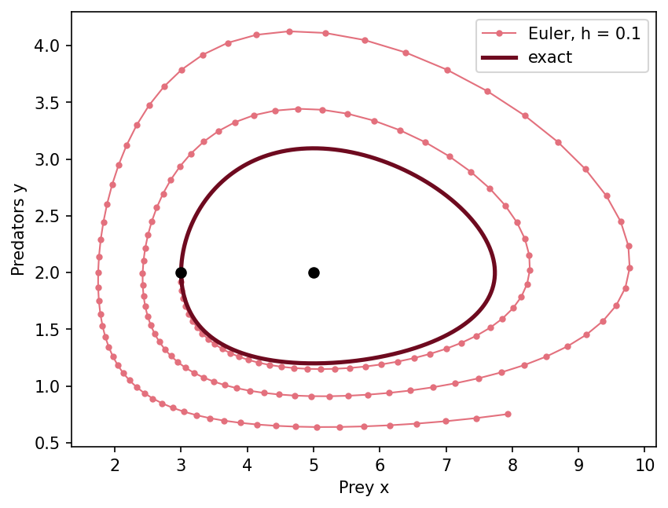

Chapter 4 · Continuous Dynamical Systems with Several Variables
4.1Systems of Differential Equations
Several quantities that influence each other lead to a system of differential equations. Its solution is viewed as time courses or as an orbit in the phase plane, where the direction field determines the motion. The programs solve the systems with solve_ivp (Python) or ode45 (MATLAB), or with Euler's method.
For each figure of the section you will find the program that produces it. Change parameters and initial values and observe what happens. Figure and equation numbers refer to the book.
Fig. 4.2
Predator–prey model
dx/dt = r (1 − x/K) x − c x y, dy/dt = d x y − e y
Prey and predators oscillate with a shift and approach the steady state (5, 1). In the phase plane this becomes a spiral.

# Fig. 4.2: Continuous predator-prey model (book, Section 4.1, Eq. 4.2)
# dx/dt = r (1 - x/K) x - c x y, dy/dt = d x y - e y with r = 1, K = 10, c = 0.5, d = 0.2, e = 1, x(0) = 8, y(0) = 0.5
# left time courses, right the same solution in the phase plane
# (c) 2026 Philipp Kügler · Program for the book "Dynamical Systems in the Life Sciences" · MIT License (see LICENSE)
using Printf, Plots
using OrdinaryDiffEq # package OrdinaryDiffEq: using Pkg; Pkg.add("OrdinaryDiffEq")
# solves dz/dt = f(t, z) and returns the solution at the times t (row i = component i)
loese(f, z0, t; alg = Tsit5(), kw...) = Array(solve(ODEProblem((z, p, s) -> f(s, z), float.(z0), (t[1], t[end])), alg;
reltol = 1e-10, abstol = 1e-12, saveat = t, kw...))
R1 = RGB(0.43, 0.04, 0.12); R2 = RGB(0.64, 0.08, 0.18); R3 = RGB(0.89, 0.44, 0.49)
BL = RGB(0, 0.447, 0.741); HB = RGB(0.45, 0.70, 0.90); GR = RGB(0.2, 0.6, 0.25)
idx(t, tt) = findfirst(t .>= tt - 1e-9) # first index with t >= tt
r = 1; K = 10; c = 0.5; d = 0.2; e = 1
f(t, z) = [r * (1 - z[1] / K) * z[1] - c * z[1] * z[2], d * z[1] * z[2] - e * z[2]]
t = range(0, 40, length = 2001)
z = loese(f, [8, 0.5], t); x = z[1, :]; y = z[2, :]
for tt in (10, 20, 40)
i = idx(t, tt)
@printf("t = %2d: x = %.3f, y = %.3f\n", tt, x[i], y[i])
end
@printf("steady state (e/d, r/c (1 - e/(d K))) = (%g, %g)\n", e / d, r / c * (1 - e / (d * K)))
p1 = plot(t, x, color = R1, lw = 2, label = "Prey x(t)", xlabel = "t")
plot!(p1, t, y, color = R3, lw = 2, label = "Predators y(t)")
p2 = plot(x, y, color = R2, lw = 2, legend = false, xlabel = "Prey x", ylabel = "Predators y")
scatter!(p2, [8, 5], [0.5, 1], color = :black)
display(plot(p1, p2, layout = (1, 2), size = (900, 420)))% Fig. 4.2: Continuous predator-prey model (book, Section 4.1, Eq. 4.2)
% dx/dt = r (1 - x/K) x - c x y, dy/dt = d x y - e y with r = 1, K = 10, c = 0.5, d = 0.2, e = 1, x(0) = 8, y(0) = 0.5
% left time courses, right the same solution in the phase plane
% (c) 2026 Philipp Kügler · Program for the book "Dynamical Systems in the Life Sciences" · MIT License (see LICENSE)
r = 1; K = 10; c = 0.5; d = 0.2; e = 1;
f = @(t, z) [r * (1 - z(1) / K) * z(1) - c * z(1) * z(2); d * z(1) * z(2) - e * z(2)];
opt = odeset('RelTol', 1e-9, 'AbsTol', 1e-11);
t = linspace(0, 40, 2001);
[t, z] = ode45(f, t, [8; 0.5], opt); % row i of z: solution at time t(i)
x = z(:, 1); y = z(:, 2);
for tt = [10 20 40]
i = find(t >= tt - 1e-9, 1);
fprintf('t = %2d: x = %.3f, y = %.3f\n', tt, x(i), y(i));
end
fprintf('steady state (e/d, r/c (1 - e/(d K))) = (%g, %g)\n', e / d, r / c * (1 - e / (d * K)));
subplot(1, 2, 1);
plot(t, x, 'Color', [0.43 0.04 0.12], 'LineWidth', 2); hold on
plot(t, y, 'Color', [0.89 0.44 0.49], 'LineWidth', 2); hold off
xlabel('t'); legend('Prey x(t)', 'Predators y(t)');
subplot(1, 2, 2);
plot(x, y, 'Color', [0.64 0.08 0.18], 'LineWidth', 2); hold on
plot([x(1) 5], [y(1) 1], 'ko', 'MarkerFaceColor', 'k'); hold off
xlabel('Prey x'); ylabel('Predators y');# Fig. 4.2: Continuous predator-prey model (book, Section 4.1, Eq. 4.2)
# dx/dt = r (1 - x/K) x - c x y, dy/dt = d x y - e y with r = 1, K = 10, c = 0.5, d = 0.2, e = 1, x(0) = 8, y(0) = 0.5
# left time courses, right the same solution in the phase plane
# (c) 2026 Philipp Kügler · Program for the book "Dynamical Systems in the Life Sciences" · MIT License (see LICENSE)
import numpy as np
import matplotlib.pyplot as plt
from scipy.integrate import solve_ivp
r, K, c, d, e = 1, 10, 0.5, 0.2, 1
f = lambda t, z: [r * (1 - z[0] / K) * z[0] - c * z[0] * z[1], d * z[0] * z[1] - e * z[1]]
t = np.linspace(0, 40, 2001)
s = solve_ivp(f, [0, 40], [8, 0.5], t_eval=t, rtol=1e-9, atol=1e-11)
x, y = s.y
for tt in [10, 20, 40]:
i = np.searchsorted(t, tt)
print(f"t = {tt:2d}: x = {x[i]:.3f}, y = {y[i]:.3f}")
print(f"steady state (e/d, r/c (1 - e/(d K))) = ({e / d:g}, {r / c * (1 - e / (d * K)):g})")
fig, axs = plt.subplots(1, 2, figsize=(11, 4.5))
axs[0].plot(t, x, color=(0.43, 0.04, 0.12), lw=2, label="Prey x(t)")
axs[0].plot(t, y, color=(0.89, 0.44, 0.49), lw=2, label="Predators y(t)")
axs[0].set_xlabel("t"); axs[0].legend()
axs[1].plot(x, y, color=(0.64, 0.08, 0.18), lw=2); axs[1].plot(x[0], y[0], "ko"); axs[1].plot(5, 1, "ko")
axs[1].set_xlabel("Prey x"); axs[1].set_ylabel("Predators y")
plt.tight_layout()
plt.show()# Fig. 4.2: Continuous predator-prey model (book, Section 4.1, Eq. 4.2)
# dx/dt = r (1 - x/K) x - c x y, dy/dt = d x y - e y with r = 1, K = 10, c = 0.5, d = 0.2, e = 1, x(0) = 8, y(0) = 0.5
# left time courses, right the same solution in the phase plane
# (c) 2026 Philipp Kügler · Program for the book "Dynamical Systems in the Life Sciences" · MIT License (see LICENSE)
library(deSolve) # package deSolve: install.packages("deSolve")
r <- 1; K <- 10; c <- 0.5; d <- 0.2; e <- 1
f <- function(t, z) c(r * (1 - z[1] / K) * z[1] - c * z[1] * z[2], d * z[1] * z[2] - e * z[2])
loese <- function(f, z0, t) ode(z0, t, function(t, z, p) list(f(t, z)), NULL, method = "lsoda", rtol = 1e-10, atol = 1e-12)
x <- loese(f, c(8, 0.5), seq(0, 40, length.out = 2001)) # columns: time, x, y
for (tt in c(10, 20, 40)) {
i <- which(x[, 1] >= tt - 1e-9)[1]
cat(sprintf("t = %2d: x = %.3f, y = %.3f\n", tt, x[i, 2], x[i, 3]))
}
cat(sprintf("steady state (e/d, r/c (1 - e/(d K))) = (%g, %g)\n", e / d, r / c * (1 - e / (d * K))))
par(mfrow = c(1, 2))
plot(x[, 1], x[, 2], type = "l", col = rgb(0.43, 0.04, 0.12), lwd = 2, ylim = c(0, 10), xlab = "t", ylab = "")
lines(x[, 1], x[, 3], col = rgb(0.89, 0.44, 0.49), lwd = 2)
legend("topright", legend = c("Prey x(t)", "Predators y(t)"), col = c(rgb(0.43, 0.04, 0.12), rgb(0.89, 0.44, 0.49)), lwd = 2)
plot(x[, 2], x[, 3], type = "l", col = rgb(0.64, 0.08, 0.18), lwd = 2, xlab = "Prey x", ylab = "Predators y")
points(c(8, 5), c(0.5, 1), pch = 16)Output in the command window
t = 10: x = 5.199, y = 0.976
t = 20: x = 5.016, y = 1.000
t = 40: x = 5.000, y = 1.000
steady state (e/d, r/c (1 - e/(d K))) = (5, 1)Fig. 4.3
Direction field of the predator–prey model
arrow at the point (x, y) in the direction (dx/dt, dy/dt)
All arrows have the same length and show only the direction. At the steady states (0, 0), (10, 0), and (5, 1) both derivatives vanish.

# Fig. 4.3: Direction field of the predator-prey model (book, Section 4.1, Eq. 4.2)
# arrows in the direction (dx/dt, dy/dt), all of equal length; plus the solution from Fig. 4.2 and the steady states
# (c) 2026 Philipp Kügler · Program for the book "Dynamical Systems in the Life Sciences" · MIT License (see LICENSE)
using Printf, Plots
using OrdinaryDiffEq # package OrdinaryDiffEq: using Pkg; Pkg.add("OrdinaryDiffEq")
# solves dz/dt = f(t, z) and returns the solution at the times t (row i = component i)
loese(f, z0, t; alg = Tsit5(), kw...) = Array(solve(ODEProblem((z, p, s) -> f(s, z), float.(z0), (t[1], t[end])), alg;
reltol = 1e-10, abstol = 1e-12, saveat = t, kw...))
R1 = RGB(0.43, 0.04, 0.12); R2 = RGB(0.64, 0.08, 0.18); R3 = RGB(0.89, 0.44, 0.49)
BL = RGB(0, 0.447, 0.741); HB = RGB(0.45, 0.70, 0.90); GR = RGB(0.2, 0.6, 0.25)
r = 1; K = 10; c = 0.5; d = 0.2; e = 1
f(t, z) = [r * (1 - z[1] / K) * z[1] - c * z[1] * z[2], d * z[1] * z[2] - e * z[2]]
function feldpfeile(f) # direction field: arrows of equal length in the plot
X = Float64[]; Y = Float64[]; U = Float64[]; W = Float64[]
for x in range(0.4, 10.6, length = 18), y in range(0.15, 2.85, length = 10)
u, w = f(0, [x, y]); u /= 11; w /= 3; L = hypot(u, w)
push!(X, x); push!(Y, y); push!(U, u / L * 0.3); push!(W, w / L * 0.3 * 3 / 11)
end
return X, Y, U, W
end
X, Y, U, W = feldpfeile(f)
p = quiver(X, Y, quiver = (U, W), color = GR, legend = false, xlims = (0, 11), ylims = (0, 3), xlabel = "Prey x", ylabel = "Predators y")
z = loese(f, [8, 0.5], range(0, 40, length = 2001))
plot!(p, z[1, :], z[2, :], color = R2, lw = 2)
scatter!(p, [0, 10], [0, 0], color = :white, msc = :black, ms = 7) # unstable
scatter!(p, [5], [1], color = :black, ms = 7) # stable
for (xs, ys) in [(0, 0), (10, 0), (5, 1)]
u, w = f(0, [xs, ys])
@printf("(%2d, %d): dx/dt = %g, dy/dt = %g\n", xs, ys, u, w)
end
display(p)% Fig. 4.3: Direction field of the predator-prey model (book, Section 4.1, Eq. 4.2)
% arrows in the direction (dx/dt, dy/dt), all of equal length; plus the solution from Fig. 4.2 and the steady states
% (c) 2026 Philipp Kügler · Program for the book "Dynamical Systems in the Life Sciences" · MIT License (see LICENSE)
r = 1; K = 10; c = 0.5; d = 0.2; e = 1;
f = @(t, z) [r * (1 - z(1) / K) * z(1) - c * z(1) * z(2); d * z(1) * z(2) - e * z(2)];
opt = odeset('RelTol', 1e-9, 'AbsTol', 1e-11);
[X, Y] = meshgrid(linspace(0.4, 10.6, 18), linspace(0.15, 2.85, 10));
U = (r * (1 - X / K) .* X - c * X .* Y) / 11; % relative to the axis lengths, so that all arrows have equal length
V = (d * X .* Y - e * Y) / 3;
L = sqrt(U.^2 + V.^2);
quiver(X, Y, U ./ L * 0.3, V ./ L * 0.3 * 3 / 11, 0, 'Color', [0.2 0.6 0.25]); hold on
[t, z] = ode45(f, linspace(0, 40, 2001), [8; 0.5], opt);
plot(z(:, 1), z(:, 2), 'Color', [0.64 0.08 0.18], 'LineWidth', 2);
plot([0 10], [0 0], 'ko', 'MarkerFaceColor', 'w', 'MarkerSize', 9); % unstable
plot(5, 1, 'ko', 'MarkerFaceColor', 'k', 'MarkerSize', 9); hold off % stable
P = [0 0; 10 0; 5 1];
for i = 1:3
w = f(0, P(i, :)');
fprintf('(%2d, %d): dx/dt = %g, dy/dt = %g\n', P(i, 1), P(i, 2), w(1), w(2));
end
xlim([0 11]); ylim([0 3]); xlabel('Prey x'); ylabel('Predators y');# Fig. 4.3: Direction field of the predator-prey model (book, Section 4.1, Eq. 4.2)
# arrows in the direction (dx/dt, dy/dt), all of equal length; plus the solution from Fig. 4.2 and the steady states
# (c) 2026 Philipp Kügler · Program for the book "Dynamical Systems in the Life Sciences" · MIT License (see LICENSE)
import numpy as np
import matplotlib.pyplot as plt
from scipy.integrate import solve_ivp
r, K, c, d, e = 1, 10, 0.5, 0.2, 1
f = lambda t, z: [r * (1 - z[0] / K) * z[0] - c * z[0] * z[1], d * z[0] * z[1] - e * z[1]]
X, Y = np.meshgrid(np.linspace(0.4, 10.6, 18), np.linspace(0.15, 2.85, 10))
U, V = f(0, [X, Y])
U, V = U / 11, V / 3 # relative to the axis lengths, so that all arrows in the plot have equal length
L = np.hypot(U, V)
plt.quiver(X, Y, U / L * 0.3, V / L * 0.3 * 3 / 11, color=(0.2, 0.6, 0.25), angles="xy", scale_units="xy", scale=1, width=0.003)
s = solve_ivp(f, [0, 40], [8, 0.5], t_eval=np.linspace(0, 40, 2001), rtol=1e-9, atol=1e-11)
plt.plot(s.y[0], s.y[1], color=(0.64, 0.08, 0.18), lw=2)
plt.plot([0, 10], [0, 0], "o", mfc="w", mec="k", ms=9, clip_on=False) # unstable
plt.plot(5, 1, "ko", ms=9) # stable
for xs, ys in [(0, 0), (10, 0), (5, 1)]:
print(f"({xs:2d}, {ys}): dx/dt = {f(0, [xs, ys])[0]:g}, dy/dt = {f(0, [xs, ys])[1]:g}")
plt.xlim(0, 11); plt.ylim(0, 3); plt.xlabel("Prey x"); plt.ylabel("Predators y")
plt.show()# Fig. 4.3: Direction field of the predator-prey model (book, Section 4.1, Eq. 4.2)
# arrows in the direction (dx/dt, dy/dt), all of equal length; plus the solution from Fig. 4.2 and the steady states
# (c) 2026 Philipp Kügler · Program for the book "Dynamical Systems in the Life Sciences" · MIT License (see LICENSE)
library(deSolve) # package deSolve: install.packages("deSolve")
r <- 1; K <- 10; c <- 0.5; d <- 0.2; e <- 1
f <- function(t, z) c(r * (1 - z[1] / K) * z[1] - c * z[1] * z[2], d * z[1] * z[2] - e * z[2])
loese <- function(f, z0, t) ode(z0, t, function(t, z, p) list(f(t, z)), NULL, method = "lsoda", rtol = 1e-10, atol = 1e-12)
feld <- function(f, xl, yl, nx, ny, laenge = 0.3) { # direction field: arrows of equal length (relative to the axis lengths)
g <- expand.grid(x = seq(xl[1], xl[2], length.out = nx), y = seq(yl[1], yl[2], length.out = ny))
w <- t(apply(g, 1, function(p) f(0, p))); sx <- diff(xl); sy <- diff(yl)
u <- w[, 1] / sx; v <- w[, 2] / sy; L <- sqrt(u^2 + v^2) + 1e-12
arrows(g$x, g$y, g$x + u / L * laenge * sx / 11, g$y + v / L * laenge * sy / 11, length = 0.04, col = rgb(0.2, 0.6, 0.25))
}
plot(NULL, xlim = c(0, 11), ylim = c(0, 3), xlab = "Prey x", ylab = "Predators y")
feld(f, c(0.4, 10.6), c(0.15, 2.85), 18, 10)
x <- loese(f, c(8, 0.5), seq(0, 40, length.out = 2001))
lines(x[, 2], x[, 3], col = rgb(0.64, 0.08, 0.18), lwd = 2)
points(c(0, 10), c(0, 0), pch = 21, bg = "white", cex = 1.3, xpd = TRUE) # unstable
points(5, 1, pch = 16, cex = 1.3) # stable
for (p in list(c(0, 0), c(10, 0), c(5, 1))) { w <- f(0, p); cat(sprintf("(%2d, %g): dx/dt = %g, dy/dt = %g\n", p[1], p[2], w[1], w[2])) }Output in the command window
( 0, 0): dx/dt = 0, dy/dt = 0
(10, 0): dx/dt = 0, dy/dt = 0
( 5, 1): dx/dt = 0, dy/dt = 0Fig. 4.4
Classical Lotka–Volterra model
dx/dt = r x − c x y, dy/dt = d x y − e y
Without a carrying capacity the orbits are closed: the quantity H(x, y) = d x − e ln x + c y − r ln y remains constant along every solution, as the output confirms.

# Fig. 4.4: Classical Lotka-Volterra model (book, Section 4.1, Eq. 4.3)
# dx/dt = r x - c x y, dy/dt = d x y - e y with r = 1, c = 0.5, d = 0.2, e = 1
# left periodic time courses for x(0) = 3, y(0) = 2, right closed orbits for different initial values
# (c) 2026 Philipp Kügler · Program for the book "Dynamical Systems in the Life Sciences" · MIT License (see LICENSE)
using Printf, Plots
using OrdinaryDiffEq # package OrdinaryDiffEq: using Pkg; Pkg.add("OrdinaryDiffEq")
# solves dz/dt = f(t, z) and returns the solution at the times t (row i = component i)
loese(f, z0, t; alg = Tsit5(), kw...) = Array(solve(ODEProblem((z, p, s) -> f(s, z), float.(z0), (t[1], t[end])), alg;
reltol = 1e-10, abstol = 1e-12, saveat = t, kw...))
R1 = RGB(0.43, 0.04, 0.12); R2 = RGB(0.64, 0.08, 0.18); R3 = RGB(0.89, 0.44, 0.49)
BL = RGB(0, 0.447, 0.741); HB = RGB(0.45, 0.70, 0.90); GR = RGB(0.2, 0.6, 0.25)
r = 1; c = 0.5; d = 0.2; e = 1
f(t, z) = [r * z[1] - c * z[1] * z[2], d * z[1] * z[2] - e * z[2]]
H(x, y) = d * x - e * log(x) + c * y - r * log(y) # remains constant along every solution
t = range(0, 25, length = 2501)
z = loese(f, [3, 2], t)
p1 = plot(t, z[1, :], color = R1, lw = 2, label = "Prey", xlabel = "t")
plot!(p1, t, z[2, :], color = R3, lw = 2, label = "Predators")
p2 = plot(legend = false, xlabel = "Prey x", ylabel = "Predators y")
for (i, x0) in enumerate([4, 3, 1.5])
z = loese(f, [x0, 2], range(0, 12, length = 1201))
plot!(p2, z[1, :], z[2, :], color = [R1, R2, R3][i], lw = 2)
@printf("x(0) = %g: H at the start %.6f, at the end %.6f\n", x0, H(x0, 2), H(z[1, end], z[2, end]))
end
scatter!(p2, [e / d], [r / c], color = :black)
display(plot(p1, p2, layout = (1, 2), size = (900, 420)))% Fig. 4.4: Classical Lotka-Volterra model (book, Section 4.1, Eq. 4.3)
% dx/dt = r x - c x y, dy/dt = d x y - e y with r = 1, c = 0.5, d = 0.2, e = 1
% left periodic time courses for x(0) = 3, y(0) = 2, right closed orbits for different initial values
% (c) 2026 Philipp Kügler · Program for the book "Dynamical Systems in the Life Sciences" · MIT License (see LICENSE)
r = 1; c = 0.5; d = 0.2; e = 1;
f = @(t, z) [r * z(1) - c * z(1) * z(2); d * z(1) * z(2) - e * z(2)];
H = @(x, y) d * x - e * log(x) + c * y - r * log(y); % remains constant along every solution
opt = odeset('RelTol', 1e-9, 'AbsTol', 1e-11);
subplot(1, 2, 1);
[t, z] = ode45(f, linspace(0, 25, 2501), [3; 2], opt);
plot(t, z(:, 1), 'Color', [0.43 0.04 0.12], 'LineWidth', 2); hold on
plot(t, z(:, 2), 'Color', [0.89 0.44 0.49], 'LineWidth', 2); hold off
xlabel('t'); legend('Prey', 'Predators');
subplot(1, 2, 2); hold on
rot = [0.43 0.04 0.12; 0.64 0.08 0.18; 0.89 0.44 0.49]; x0s = [4 3 1.5];
for i = 1:3
[t, z] = ode45(f, linspace(0, 12, 1201), [x0s(i); 2], opt);
plot(z(:, 1), z(:, 2), 'Color', rot(i, :), 'LineWidth', 2);
fprintf('x(0) = %g: H at the start %.6f, at the end %.6f\n', x0s(i), H(x0s(i), 2), H(z(end, 1), z(end, 2)));
end
plot(e / d, r / c, 'ko', 'MarkerFaceColor', 'k'); hold off
xlabel('Prey x'); ylabel('Predators y');# Fig. 4.4: Classical Lotka-Volterra model (book, Section 4.1, Eq. 4.3)
# dx/dt = r x - c x y, dy/dt = d x y - e y with r = 1, c = 0.5, d = 0.2, e = 1
# left periodic time courses for x(0) = 3, y(0) = 2, right closed orbits for different initial values
# (c) 2026 Philipp Kügler · Program for the book "Dynamical Systems in the Life Sciences" · MIT License (see LICENSE)
import numpy as np
import matplotlib.pyplot as plt
from scipy.integrate import solve_ivp
r, c, d, e = 1, 0.5, 0.2, 1
f = lambda t, z: [r * z[0] - c * z[0] * z[1], d * z[0] * z[1] - e * z[1]]
H = lambda x, y: d * x - e * np.log(x) + c * y - r * np.log(y) # remains constant along every solution
fig, axs = plt.subplots(1, 2, figsize=(11, 4.5))
t = np.linspace(0, 25, 2501)
s = solve_ivp(f, [0, 25], [3, 2], t_eval=t, rtol=1e-9, atol=1e-11)
axs[0].plot(t, s.y[0], color=(0.43, 0.04, 0.12), lw=2, label="Prey")
axs[0].plot(t, s.y[1], color=(0.89, 0.44, 0.49), lw=2, label="Predators")
axs[0].set_xlabel("t"); axs[0].legend()
rot = [(0.43, 0.04, 0.12), (0.64, 0.08, 0.18), (0.89, 0.44, 0.49)]
for i, x0 in enumerate([4, 3, 1.5]):
s = solve_ivp(f, [0, 12], [x0, 2], t_eval=np.linspace(0, 12, 1201), rtol=1e-9, atol=1e-11)
axs[1].plot(s.y[0], s.y[1], color=rot[i], lw=2)
print(f"x(0) = {x0}: H at the start {H(x0, 2):.6f}, at the end {H(s.y[0][-1], s.y[1][-1]):.6f}")
axs[1].plot(e / d, r / c, "ko"); axs[1].set_xlabel("Prey x"); axs[1].set_ylabel("Predators y")
plt.tight_layout()
plt.show()# Fig. 4.4: Classical Lotka-Volterra model (book, Section 4.1, Eq. 4.3)
# dx/dt = r x - c x y, dy/dt = d x y - e y with r = 1, c = 0.5, d = 0.2, e = 1
# left periodic time courses for x(0) = 3, y(0) = 2, right closed orbits for different initial values
# (c) 2026 Philipp Kügler · Program for the book "Dynamical Systems in the Life Sciences" · MIT License (see LICENSE)
library(deSolve) # package deSolve: install.packages("deSolve")
r <- 1; c <- 0.5; d <- 0.2; e <- 1
f <- function(t, z) c(r * z[1] - c * z[1] * z[2], d * z[1] * z[2] - e * z[2])
H <- function(x, y) d * x - e * log(x) + c * y - r * log(y) # remains constant along every solution
loese <- function(f, z0, t) ode(z0, t, function(t, z, p) list(f(t, z)), NULL, method = "lsoda", rtol = 1e-10, atol = 1e-12)
par(mfrow = c(1, 2))
x <- loese(f, c(3, 2), seq(0, 25, length.out = 2501))
plot(x[, 1], x[, 2], type = "l", col = rgb(0.43, 0.04, 0.12), lwd = 2, ylim = c(0, 10), xlab = "t", ylab = "")
lines(x[, 1], x[, 3], col = rgb(0.89, 0.44, 0.49), lwd = 2)
legend("topright", legend = c("Prey", "Predators"), col = c(rgb(0.43, 0.04, 0.12), rgb(0.89, 0.44, 0.49)), lwd = 2)
rot <- c(rgb(0.43, 0.04, 0.12), rgb(0.64, 0.08, 0.18), rgb(0.89, 0.44, 0.49))
plot(NULL, xlim = c(0, 16), ylim = c(0, 7), xlab = "Prey x", ylab = "Predators y")
x0s <- c(4, 3, 1.5)
for (i in 1:3) {
x <- loese(f, c(x0s[i], 2), seq(0, 12, length.out = 1201))
lines(x[, 2], x[, 3], col = rot[i], lwd = 2)
n <- nrow(x)
cat(sprintf("x(0) = %g: H at the start %.6f, at the end %.6f\n", x0s[i], H(x0s[i], 2), H(x[n, 2], x[n, 3])))
}
points(e / d, r / c, pch = 16)Output in the command window
x(0) = 4: H at the start -0.279442, at the end -0.279442
x(0) = 3: H at the start -0.191759, at the end -0.191759
x(0) = 1.5: H at the start 0.201388, at the end 0.201388Fig. 4.5
Competition between two yeast species
dx/dt = r1 (1 − x/K1 − γ1 y) x, dy/dt = r2 (1 − y/K2 − γ2 x) y
S. cerevisiae grows faster at first but is displaced by S. kephir in the long run.

# Fig. 4.5: Competition between two yeast species (book, Section 4.1, Eq. 4.4)
# dx/dt = r1 (1 - x/K1 - g1 y) x, dy/dt = r2 (1 - y/K2 - g2 x) y with the parameters after Gause, x(0) = y(0) = 0.5
# (c) 2026 Philipp Kügler · Program for the book "Dynamical Systems in the Life Sciences" · MIT License (see LICENSE)
using Printf, Plots
using OrdinaryDiffEq # package OrdinaryDiffEq: using Pkg; Pkg.add("OrdinaryDiffEq")
# solves dz/dt = f(t, z) and returns the solution at the times t (row i = component i)
loese(f, z0, t; alg = Tsit5(), kw...) = Array(solve(ODEProblem((z, p, s) -> f(s, z), float.(z0), (t[1], t[end])), alg;
reltol = 1e-10, abstol = 1e-12, saveat = t, kw...))
R1 = RGB(0.43, 0.04, 0.12); R2 = RGB(0.64, 0.08, 0.18); R3 = RGB(0.89, 0.44, 0.49)
BL = RGB(0, 0.447, 0.741); HB = RGB(0.45, 0.70, 0.90); GR = RGB(0.2, 0.6, 0.25)
idx(t, tt) = findfirst(t .>= tt - 1e-9) # first index with t >= tt
r1 = 0.0607; K1 = 5.8; g1 = 0.0757 # S. kephir
r2 = 0.2183; K2 = 13; g2 = 0.2423 # S. cerevisiae
f(t, z) = [r1 * (1 - z[1] / K1 - g1 * z[2]) * z[1], r2 * (1 - z[2] / K2 - g2 * z[1]) * z[2]]
t = range(0, 300, length = 3001)
z = loese(f, [0.5, 0.5], t); x = z[1, :]; y = z[2, :]
for tt in (50, 100, 300)
i = idx(t, tt)
@printf("t = %3d h: x = %.3f, y = %.3f\n", tt, x[i], y[i])
end
@printf("y reaches its maximum %.3f at t = %.1f h\n", maximum(y), t[argmax(y)])
p = plot(t, x, color = R1, lw = 2, label = "S. kephir x(t)", xlabel = "t (hours)", ylabel = "Yeast volume")
plot!(p, t, y, color = R3, lw = 2, label = "S. cerevisiae y(t)")
display(p)% Fig. 4.5: Competition between two yeast species (book, Section 4.1, Eq. 4.4)
% dx/dt = r1 (1 - x/K1 - g1 y) x, dy/dt = r2 (1 - y/K2 - g2 x) y with the parameters after Gause, x(0) = y(0) = 0.5
% (c) 2026 Philipp Kügler · Program for the book "Dynamical Systems in the Life Sciences" · MIT License (see LICENSE)
r1 = 0.0607; K1 = 5.8; g1 = 0.0757; % S. kephir
r2 = 0.2183; K2 = 13; g2 = 0.2423; % S. cerevisiae
f = @(t, z) [r1 * (1 - z(1) / K1 - g1 * z(2)) * z(1); r2 * (1 - z(2) / K2 - g2 * z(1)) * z(2)];
opt = odeset('RelTol', 1e-9, 'AbsTol', 1e-11);
[t, z] = ode45(f, linspace(0, 300, 3001), [0.5; 0.5], opt);
x = z(:, 1); y = z(:, 2);
for tt = [50 100 300]
i = find(t >= tt - 1e-9, 1);
fprintf('t = %3d h: x = %.3f, y = %.3f\n', tt, x(i), y(i));
end
[ym, im] = max(y);
fprintf('y reaches its maximum %.3f at t = %.1f h\n', ym, t(im));
plot(t, x, 'Color', [0.43 0.04 0.12], 'LineWidth', 2); hold on
plot(t, y, 'Color', [0.89 0.44 0.49], 'LineWidth', 2); hold off
xlabel('t (hours)'); ylabel('Yeast volume'); legend('S. kephir x(t)', 'S. cerevisiae y(t)');# Fig. 4.5: Competition between two yeast species (book, Section 4.1, Eq. 4.4)
# dx/dt = r1 (1 - x/K1 - g1 y) x, dy/dt = r2 (1 - y/K2 - g2 x) y with the parameters after Gause, x(0) = y(0) = 0.5
# (c) 2026 Philipp Kügler · Program for the book "Dynamical Systems in the Life Sciences" · MIT License (see LICENSE)
import numpy as np
import matplotlib.pyplot as plt
from scipy.integrate import solve_ivp
r1, K1, g1 = 0.0607, 5.8, 0.0757 # S. kephir
r2, K2, g2 = 0.2183, 13, 0.2423 # S. cerevisiae
f = lambda t, z: [r1 * (1 - z[0] / K1 - g1 * z[1]) * z[0], r2 * (1 - z[1] / K2 - g2 * z[0]) * z[1]]
t = np.linspace(0, 300, 3001)
s = solve_ivp(f, [0, 300], [0.5, 0.5], t_eval=t, rtol=1e-9, atol=1e-11)
x, y = s.y
for tt in [50, 100, 300]:
i = np.searchsorted(t, tt)
print(f"t = {tt:3d} h: x = {x[i]:.3f}, y = {y[i]:.3f}")
print(f"y reaches its maximum {y.max():.3f} at t = {t[y.argmax()]:.1f} h")
plt.plot(t, x, color=(0.43, 0.04, 0.12), lw=2, label="S. kephir x(t)")
plt.plot(t, y, color=(0.89, 0.44, 0.49), lw=2, label="S. cerevisiae y(t)")
plt.xlabel("t (hours)"); plt.ylabel("Yeast volume"); plt.legend()
plt.show()# Fig. 4.5: Competition between two yeast species (book, Section 4.1, Eq. 4.4)
# dx/dt = r1 (1 - x/K1 - g1 y) x, dy/dt = r2 (1 - y/K2 - g2 x) y with the parameters after Gause, x(0) = y(0) = 0.5
# (c) 2026 Philipp Kügler · Program for the book "Dynamical Systems in the Life Sciences" · MIT License (see LICENSE)
library(deSolve) # package deSolve: install.packages("deSolve")
r1 <- 0.0607; K1 <- 5.8; g1 <- 0.0757 # S. kephir
r2 <- 0.2183; K2 <- 13; g2 <- 0.2423 # S. cerevisiae
f <- function(t, z) c(r1 * (1 - z[1] / K1 - g1 * z[2]) * z[1], r2 * (1 - z[2] / K2 - g2 * z[1]) * z[2])
loese <- function(f, z0, t) ode(z0, t, function(t, z, p) list(f(t, z)), NULL, method = "lsoda", rtol = 1e-10, atol = 1e-12)
x <- loese(f, c(0.5, 0.5), seq(0, 300, length.out = 3001))
for (tt in c(50, 100, 300)) {
i <- which(x[, 1] >= tt - 1e-9)[1]
cat(sprintf("t = %3d h: x = %.3f, y = %.3f\n", tt, x[i, 2], x[i, 3]))
}
cat(sprintf("y reaches its maximum %.3f at t = %.1f h\n", max(x[, 3]), x[which.max(x[, 3]), 1]))
plot(x[, 1], x[, 2], type = "l", col = rgb(0.43, 0.04, 0.12), lwd = 2, ylim = c(0, 10), xlab = "t (hours)", ylab = "Yeast volume")
lines(x[, 1], x[, 3], col = rgb(0.89, 0.44, 0.49), lwd = 2)
legend("topright", legend = c("S. kephir x(t)", "S. cerevisiae y(t)"), col = c(rgb(0.43, 0.04, 0.12), rgb(0.89, 0.44, 0.49)), lwd = 2)Output in the command window
t = 50 h: x = 1.425, y = 8.652
t = 100 h: x = 1.983, y = 7.093
t = 300 h: x = 5.791, y = 0.001
y reaches its maximum 8.780 at t = 39.9 hFig. 4.6
Damped oscillator
x1′ = x2, x2′ = −(k x1 + μ x2)/m
With the velocity as the second variable, a second-order differential equation becomes a system. The orbit spirals into the rest position.

# Fig. 4.6: Damped oscillator (book, Section 4.1, Eq. 4.5 and 4.6)
# m x'' + mu x' + k x = 0 as the system dx1/dt = x2, dx2/dt = -(k x1 + mu x2)/m with m = 1, mu = 0.4, k = 4, x1(0) = 1, x2(0) = 0
# (c) 2026 Philipp Kügler · Program for the book "Dynamical Systems in the Life Sciences" · MIT License (see LICENSE)
using Printf, Plots
using OrdinaryDiffEq # package OrdinaryDiffEq: using Pkg; Pkg.add("OrdinaryDiffEq")
# solves dz/dt = f(t, z) and returns the solution at the times t (row i = component i)
loese(f, z0, t; alg = Tsit5(), kw...) = Array(solve(ODEProblem((z, p, s) -> f(s, z), float.(z0), (t[1], t[end])), alg;
reltol = 1e-10, abstol = 1e-12, saveat = t, kw...))
R1 = RGB(0.43, 0.04, 0.12); R2 = RGB(0.64, 0.08, 0.18); R3 = RGB(0.89, 0.44, 0.49)
BL = RGB(0, 0.447, 0.741); HB = RGB(0.45, 0.70, 0.90); GR = RGB(0.2, 0.6, 0.25)
idx(t, tt) = findfirst(t .>= tt - 1e-9) # first index with t >= tt
m = 1; mu = 0.4; k = 4
f(t, z) = [z[2], -(k * z[1] + mu * z[2]) / m]
t = range(0, 20, length = 2001)
z = loese(f, [1, 0], t); x1 = z[1, :]; x2 = z[2, :]
for tt in (5, 10, 20)
i = idx(t, tt)
@printf("t = %2d: x1 = %7.4f, x2 = %7.4f\n", tt, x1[i], x2[i])
end
p1 = hline([0], color = :black, label = "", xlabel = "t")
plot!(p1, t, x1, color = R1, lw = 2, label = "Position x1")
plot!(p1, t, x2, color = R3, lw = 2, label = "Velocity x2")
p2 = plot(x1, x2, color = R2, lw = 2, legend = false, xlabel = "Position x1", ylabel = "Velocity x2")
scatter!(p2, [1, 0], [0, 0], color = :black)
display(plot(p1, p2, layout = (1, 2), size = (900, 420)))% Fig. 4.6: Damped oscillator (book, Section 4.1, Eq. 4.5 and 4.6)
% m x'' + mu x' + k x = 0 as the system dx1/dt = x2, dx2/dt = -(k x1 + mu x2)/m with m = 1, mu = 0.4, k = 4, x1(0) = 1, x2(0) = 0
% (c) 2026 Philipp Kügler · Program for the book "Dynamical Systems in the Life Sciences" · MIT License (see LICENSE)
m = 1; mu = 0.4; k = 4;
f = @(t, z) [z(2); -(k * z(1) + mu * z(2)) / m];
opt = odeset('RelTol', 1e-9, 'AbsTol', 1e-11);
[t, z] = ode45(f, linspace(0, 20, 2001), [1; 0], opt);
x1 = z(:, 1); x2 = z(:, 2);
for tt = [5 10 20]
i = find(t >= tt - 1e-9, 1);
fprintf('t = %2d: x1 = %7.4f, x2 = %7.4f\n', tt, x1(i), x2(i));
end
subplot(1, 2, 1);
plot([0 20], [0 0], 'k'); hold on
plot(t, x1, 'Color', [0.43 0.04 0.12], 'LineWidth', 2);
plot(t, x2, 'Color', [0.89 0.44 0.49], 'LineWidth', 2); hold off
xlabel('t'); legend('', 'Position x1', 'Velocity x2');
subplot(1, 2, 2);
plot(x1, x2, 'Color', [0.64 0.08 0.18], 'LineWidth', 2); hold on
plot([1 0], [0 0], 'ko', 'MarkerFaceColor', 'k'); hold off
xlabel('Position x1'); ylabel('Velocity x2');# Fig. 4.6: Damped oscillator (book, Section 4.1, Eq. 4.5 and 4.6)
# m x'' + mu x' + k x = 0 as the system dx1/dt = x2, dx2/dt = -(k x1 + mu x2)/m with m = 1, mu = 0.4, k = 4, x1(0) = 1, x2(0) = 0
# (c) 2026 Philipp Kügler · Program for the book "Dynamical Systems in the Life Sciences" · MIT License (see LICENSE)
import numpy as np
import matplotlib.pyplot as plt
from scipy.integrate import solve_ivp
m, mu, k = 1, 0.4, 4
f = lambda t, z: [z[1], -(k * z[0] + mu * z[1]) / m]
t = np.linspace(0, 20, 2001)
s = solve_ivp(f, [0, 20], [1, 0], t_eval=t, rtol=1e-9, atol=1e-11)
x1, x2 = s.y
for tt in [5, 10, 20]:
i = np.searchsorted(t, tt)
print(f"t = {tt:2d}: x1 = {x1[i]:7.4f}, x2 = {x2[i]:7.4f}")
fig, axs = plt.subplots(1, 2, figsize=(11, 4.5))
axs[0].axhline(0, color="k", lw=1)
axs[0].plot(t, x1, color=(0.43, 0.04, 0.12), lw=2, label="Position x1")
axs[0].plot(t, x2, color=(0.89, 0.44, 0.49), lw=2, label="Velocity x2")
axs[0].set_xlabel("t"); axs[0].legend()
axs[1].plot(x1, x2, color=(0.64, 0.08, 0.18), lw=2); axs[1].plot([1, 0], [0, 0], "ko")
axs[1].set_xlabel("Position x1"); axs[1].set_ylabel("Velocity x2")
plt.tight_layout()
plt.show()# Fig. 4.6: Damped oscillator (book, Section 4.1, Eq. 4.5 and 4.6)
# m x'' + mu x' + k x = 0 as the system dx1/dt = x2, dx2/dt = -(k x1 + mu x2)/m with m = 1, mu = 0.4, k = 4, x1(0) = 1, x2(0) = 0
# (c) 2026 Philipp Kügler · Program for the book "Dynamical Systems in the Life Sciences" · MIT License (see LICENSE)
library(deSolve) # package deSolve: install.packages("deSolve")
m <- 1; mu <- 0.4; k <- 4
f <- function(t, z) c(z[2], -(k * z[1] + mu * z[2]) / m)
loese <- function(f, z0, t) ode(z0, t, function(t, z, p) list(f(t, z)), NULL, method = "lsoda", rtol = 1e-10, atol = 1e-12)
x <- loese(f, c(1, 0), seq(0, 20, length.out = 2001))
for (tt in c(5, 10, 20)) {
i <- which(x[, 1] >= tt - 1e-9)[1]
cat(sprintf("t = %2d: x1 = %7.4f, x2 = %7.4f\n", tt, x[i, 2], x[i, 3]))
}
par(mfrow = c(1, 2))
plot(x[, 1], x[, 2], type = "l", col = rgb(0.43, 0.04, 0.12), lwd = 2, ylim = c(-2.2, 2.2), xlab = "t", ylab = "")
lines(x[, 1], x[, 3], col = rgb(0.89, 0.44, 0.49), lwd = 2); abline(h = 0)
legend("topright", legend = c("Position x1", "Velocity x2"), col = c(rgb(0.43, 0.04, 0.12), rgb(0.89, 0.44, 0.49)), lwd = 2)
plot(x[, 2], x[, 3], type = "l", col = rgb(0.64, 0.08, 0.18), lwd = 2, xlab = "Position x1", ylab = "Velocity x2")
points(c(1, 0), c(0, 0), pch = 16)Output in the command window
t = 5: x1 = -0.3369, x2 = 0.3707
t = 10: x1 = 0.0791, x2 = -0.2360
t = 20: x1 = -0.0077, x2 = -0.0318Fig. 4.7
Euler's method for a system
xn+1 = xn + h f(xn), h = 0.1
Euler's method leaves the closed orbit and spirals outward. The output shows how the quantity H, which should be constant, grows.

# Fig. 4.7: Euler's method for the Lotka-Volterra model (book, Section 4.1, Eq. 4.7)
# x_{n+1} = x_n + h (r x_n - c x_n y_n), y_{n+1} = y_n + h (d x_n y_n - e y_n) with h = 0.1; the exact orbit is closed
# (c) 2026 Philipp Kügler · Program for the book "Dynamical Systems in the Life Sciences" · MIT License (see LICENSE)
using Printf, Plots
using OrdinaryDiffEq # package OrdinaryDiffEq: using Pkg; Pkg.add("OrdinaryDiffEq")
# solves dz/dt = f(t, z) and returns the solution at the times t (row i = component i)
loese(f, z0, t; alg = Tsit5(), kw...) = Array(solve(ODEProblem((z, p, s) -> f(s, z), float.(z0), (t[1], t[end])), alg;
reltol = 1e-10, abstol = 1e-12, saveat = t, kw...))
R1 = RGB(0.43, 0.04, 0.12); R2 = RGB(0.64, 0.08, 0.18); R3 = RGB(0.89, 0.44, 0.49)
BL = RGB(0, 0.447, 0.741); HB = RGB(0.45, 0.70, 0.90); GR = RGB(0.2, 0.6, 0.25)
r = 1; c = 0.5; d = 0.2; e = 1
f(t, z) = [r * z[1] - c * z[1] * z[2], d * z[1] * z[2] - e * z[2]]
h = 0.1; N = 160
x = zeros(N + 1); y = zeros(N + 1); x[1] = 3; y[1] = 2
for n in 1:N
x[n + 1] = x[n] + h * (r * x[n] - c * x[n] * y[n])
y[n + 1] = y[n] + h * (d * x[n] * y[n] - e * y[n])
end
z = loese(f, [3, 2], range(0, 6.5, length = 651))
H(x, y) = d * x - e * log(x) + c * y - r * log(y)
@printf("H exact (constant): %.4f\n", H(3, 2))
println("H Euler after 40, 80, 160 steps: ", join([@sprintf("%.4f", H(x[n + 1], y[n + 1])) for n in (40, 80, 160)], " "))
p = plot(x, y, marker = :circle, ms = 2, color = R3, lw = 1, label = "Euler, h = 0.1", xlabel = "Prey x", ylabel = "Predators y")
plot!(p, z[1, :], z[2, :], color = R1, lw = 2.5, label = "exact")
scatter!(p, [3, 5], [2, 2], color = :black, label = "")
display(p)% Fig. 4.7: Euler's method for the Lotka-Volterra model (book, Section 4.1, Eq. 4.7)
% x_{n+1} = x_n + h (r x_n - c x_n y_n), y_{n+1} = y_n + h (d x_n y_n - e y_n) with h = 0.1; the exact orbit is closed
% (c) 2026 Philipp Kügler · Program for the book "Dynamical Systems in the Life Sciences" · MIT License (see LICENSE)
r = 1; c = 0.5; d = 0.2; e = 1;
f = @(t, z) [r * z(1) - c * z(1) * z(2); d * z(1) * z(2) - e * z(2)];
h = 0.1; N = 160;
x = zeros(1, N + 1); y = zeros(1, N + 1); x(1) = 3; y(1) = 2;
for n = 1:N
x(n + 1) = x(n) + h * (r * x(n) - c * x(n) * y(n));
y(n + 1) = y(n) + h * (d * x(n) * y(n) - e * y(n));
end
opt = odeset('RelTol', 1e-9, 'AbsTol', 1e-11);
[t, z] = ode45(f, linspace(0, 6.5, 651), [3; 2], opt);
H = @(x, y) d * x - e * log(x) + c * y - r * log(y);
fprintf('H exact (constant): %.4f\n', H(3, 2));
fprintf('H Euler after 40, 80, 160 steps: %.4f %.4f %.4f\n', H(x([41 81 161]), y([41 81 161])));
plot(x, y, '-o', 'Color', [0.89 0.44 0.49], 'MarkerSize', 3); hold on
plot(z(:, 1), z(:, 2), 'Color', [0.43 0.04 0.12], 'LineWidth', 2.5);
plot([3 5], [2 2], 'ko', 'MarkerFaceColor', 'k'); hold off
xlabel('Prey x'); ylabel('Predators y'); legend('Euler, h = 0.1', 'exact');# Fig. 4.7: Euler's method for the Lotka-Volterra model (book, Section 4.1, Eq. 4.7)
# x_{n+1} = x_n + h (r x_n - c x_n y_n), y_{n+1} = y_n + h (d x_n y_n - e y_n) with h = 0.1; the exact orbit is closed
# (c) 2026 Philipp Kügler · Program for the book "Dynamical Systems in the Life Sciences" · MIT License (see LICENSE)
import numpy as np
import matplotlib.pyplot as plt
from scipy.integrate import solve_ivp
r, c, d, e = 1, 0.5, 0.2, 1
f = lambda t, z: [r * z[0] - c * z[0] * z[1], d * z[0] * z[1] - e * z[1]]
h, N = 0.1, 160
x = np.zeros(N + 1); y = np.zeros(N + 1); x[0], y[0] = 3, 2
for n in range(N):
x[n + 1] = x[n] + h * (r * x[n] - c * x[n] * y[n])
y[n + 1] = y[n] + h * (d * x[n] * y[n] - e * y[n])
s = solve_ivp(f, [0, 6.5], [3, 2], t_eval=np.linspace(0, 6.5, 651), rtol=1e-9, atol=1e-11)
H = lambda x, y: d * x - e * np.log(x) + c * y - r * np.log(y)
print(f"H exact (constant): {H(3, 2):.4f}")
print("H Euler after 40, 80, 160 steps:", " ".join(f"{H(x[n], y[n]):.4f}" for n in [40, 80, 160]))
plt.plot(x, y, "-o", color=(0.89, 0.44, 0.49), ms=3, lw=1, label="Euler, h = 0.1")
plt.plot(s.y[0], s.y[1], color=(0.43, 0.04, 0.12), lw=2.5, label="exact")
plt.plot([3, 5], [2, 2], "ko")
plt.xlabel("Prey x"); plt.ylabel("Predators y"); plt.legend()
plt.show()# Fig. 4.7: Euler's method for the Lotka-Volterra model (book, Section 4.1, Eq. 4.7)
# x_{n+1} = x_n + h (r x_n - c x_n y_n), y_{n+1} = y_n + h (d x_n y_n - e y_n) with h = 0.1; the exact orbit is closed
# (c) 2026 Philipp Kügler · Program for the book "Dynamical Systems in the Life Sciences" · MIT License (see LICENSE)
library(deSolve) # package deSolve: install.packages("deSolve")
r <- 1; c <- 0.5; d <- 0.2; e <- 1
f <- function(t, z) c(r * z[1] - c * z[1] * z[2], d * z[1] * z[2] - e * z[2])
h <- 0.1; N <- 160
x <- numeric(N + 1); y <- numeric(N + 1); x[1] <- 3; y[1] <- 2
for (n in 1:N) {
x[n + 1] <- x[n] + h * (r * x[n] - c * x[n] * y[n])
y[n + 1] <- y[n] + h * (d * x[n] * y[n] - e * y[n])
}
loese <- function(f, z0, t) ode(z0, t, function(t, z, p) list(f(t, z)), NULL, method = "lsoda", rtol = 1e-10, atol = 1e-12)
ex <- loese(f, c(3, 2), seq(0, 6.5, length.out = 651))
H <- function(x, y) d * x - e * log(x) + c * y - r * log(y)
cat(sprintf("H exact (constant): %.4f\n", H(3, 2)))
cat("H Euler after 40, 80, 160 steps:", sprintf("%.4f", H(x[c(41, 81, 161)], y[c(41, 81, 161)])), "\n")
plot(x, y, type = "o", pch = 16, cex = 0.5, col = rgb(0.89, 0.44, 0.49), xlab = "Prey x", ylab = "Predators y")
lines(ex[, 2], ex[, 3], col = rgb(0.43, 0.04, 0.12), lwd = 2.5)
points(c(3, 5), c(2, 2), pch = 16)
legend("topright", legend = c("Euler, h = 0.1", "exact"), col = c(rgb(0.89, 0.44, 0.49), rgb(0.43, 0.04, 0.12)), lwd = c(1, 2.5), pch = c(16, NA))Output in the command window
H exact (constant): -0.1918
H Euler after 40, 80, 160 steps: -0.1439 -0.0681 0.1756MATLAB apps from the course
Download, put into a folder, and type the name without extension in MATLAB, e.g. hai_thunfisch_app. The apps use the graphical user interface of MATLAB and do not run in GNU Octave. Their user interface is in German.
- hai_thunfisch_app.mPredator–prey model “shark and tuna”